Translations and Split View
LemmaLoom can translate documents into other languages. When you translate a document, the translation will be kept as its own separate document, appearing under the original in your navigation sidebar. This new document can be read, coded, and queried normally. Furthermore, all of the codings, memos, bookmarks, and links added to one language version will be copied to the others.
Translations can be used in lieu of language support in LemmaLoom’s grammar analysis; for example, since LemmaLoom indexes only English, German, and Chinese, a Spanish opinion piece can be read and coded, yet an automatic English translation will allow lenses and word sketches. Alternatively, you can use a translation to compare your text with itself in another language or to read a translation of material in a language you know less well alongside its original text. By translating your texts, you let colleagues follow your coding in languages they understand better; grammar results from translations, however, will always describe the wording of the machine-translated text (see Translations in analyses later in this chapter).
All examples shown in this chapter will come from “Climate Debate”, LemmaLoom’s example project available from File ▸ Import ▸ Example Project (see The example project in Chapter 1, Introduction). In the “Climate Debate” example project, the English-language activist op-ed titled “Running Out of Time” is translated once into German, titled “Running Out of Time (German)”. The codings, memo, bookmark, and link added to the original are carried forward into the translation.
Key terms
- In LemmaLoom, an original is a document that you imported. A translation, meanwhile, refers to any document generated from an original by LemmaLoom. Only originals can be translated, and an original can have translations in several languages. When you manually import a translation document, it is considered an ordinary document because only LemmaLoom-generated translations belong to an original.
- Language versions are a document’s original and all of its translations. Both “Running Out of Time” and “Running Out of Time (German)” are language versions of the same op-ed.
- The alignment represents a mapping of each sentence in the original to its translation counterpart. LemmaLoom creates the alignment during translation for proper placement of annotations as well as synchronized scrolling of the two language versions.
- A copy is LemmaLoom’s term for the annotation it adds to the other language versions of a document whenever you annotate one of them with a coding, memo, bookmark, or link.
- Split view is the splitting of the reader into two panes side by side. Specifically, the reader splits into the left pane, or main pane, and the right pane; the former retains the tab strip while the latter displays one document under a header of its own. Your active pane is whichever pane had the most recent click. Your active pane also determines which document the inspector and the commands in the menu bar work on.
Translating a document
LemmaLoom uses macOS’ integrated translation functionality. The first use of a pair of languages requires that you download those languages via macOS.
Available languages depend upon your version of macOS. Translating from the source language to any language other than English, German, or Chinese results in documents you can read, search via the search bar, code, and annotate as usual. Lenses, grammar views, and word sketches require English, German, or Chinese (see Other languages in Chapter 21, Analysis and Indexing).
Making a translation
“Running Out of Time (German)” is a translation of the English op-ed piece in the “Climate Debate” project. This figure depicts the Translate dialog set to translate “Net Zero Will Cost You”, the skeptical op-ed piece, into German.
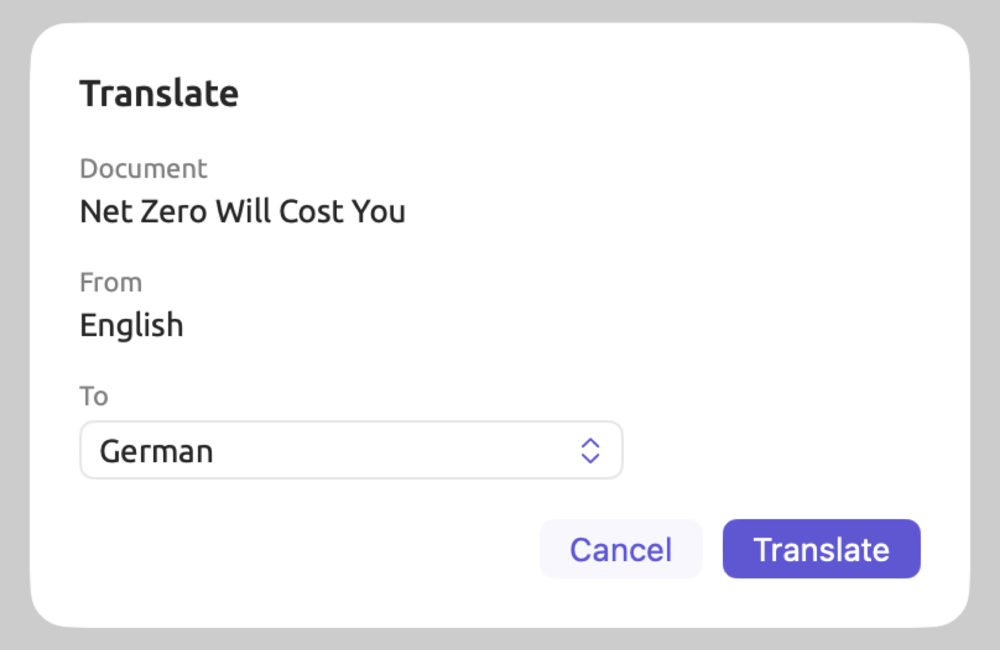
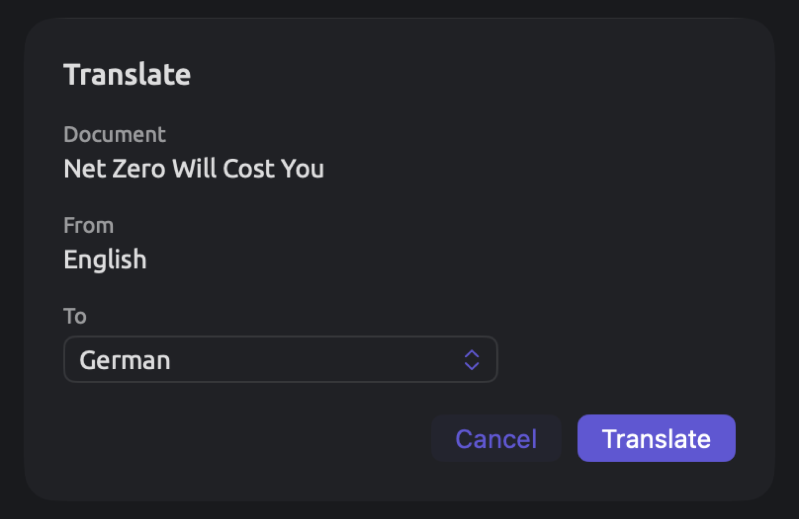
To make a translation:
- In the sidebar, right-click the document and choose Translate, or select it and choose Project ▸ Translate. The command is available for originals only.
- The Translate dialog shows the document’s title under Document and its language under From. Under To, choose the language to translate into.
- Click Translate.
- If macOS has not yet downloaded the two languages, it asks whether to download them. Confirm the download. Translate stays disabled while macOS prepares the languages, and once they are ready, the dialog closes and the translation starts.
Should your Mac have both languages already, the dialog closes immediately upon clicking Translate.
The translation happens in the background. In the navigation sidebar underneath the original, a new row is added with the language name. This row has either a spinner while the translation waits to start processing, or a progress ring showing translation progress. Once the translation completes successfully, LemmaLoom swaps out the row with the new document. An example name might be “Net Zero Will Cost You (German)”. The indexing process begins next, keeping the translation’s lens menu disabled during this phase (refer to What is available without the analysis in Chapter 21, Analysis and Indexing).
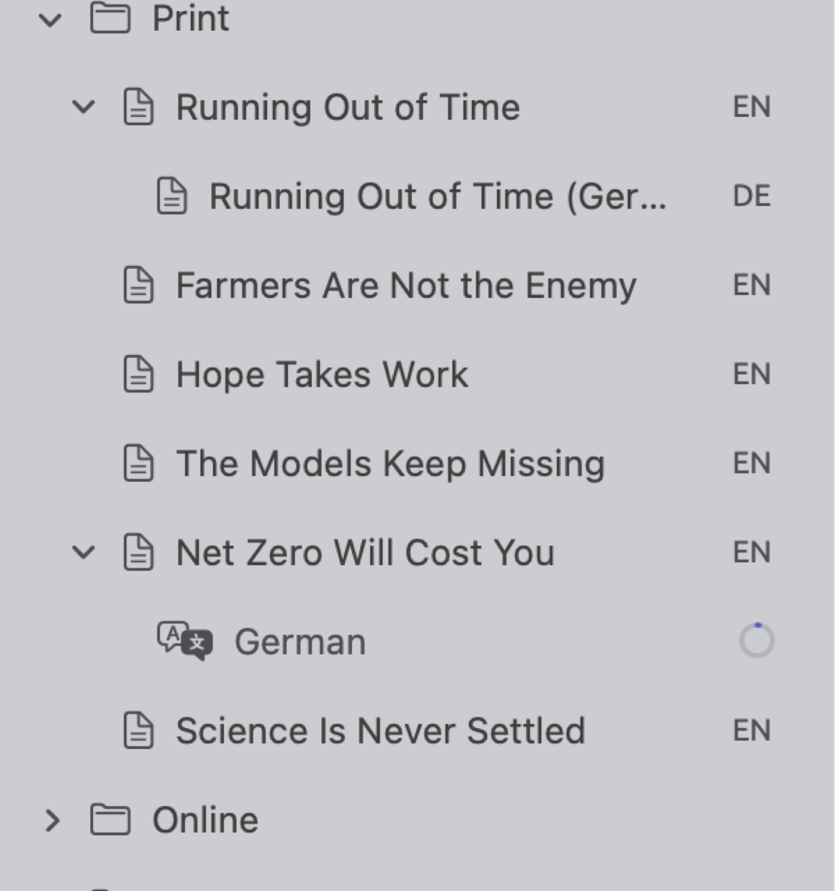
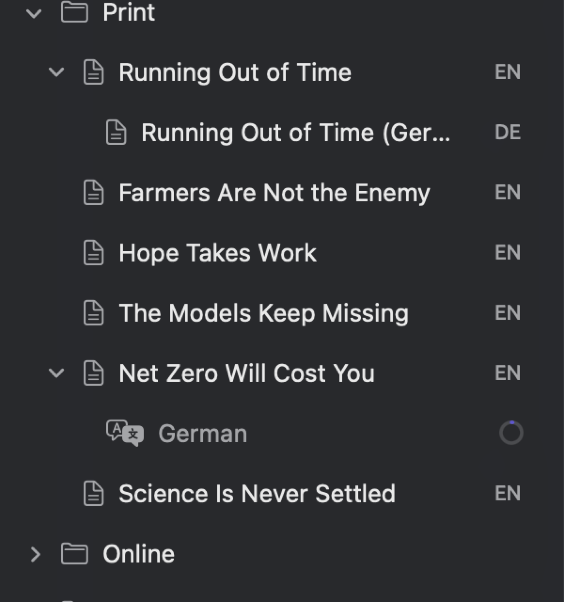
The Translate dialog
From displays the document’s language. This language may either be selected during importing or detected by LemmaLoom upon importing. Should the language be wrong, fix it via Document Properties prior to translating (see Document properties in Chapter 3, Projects and Documents).
To contains a listing of all languages macOS supports translation into. The languages are sorted alphabetically. The language of your document is omitted, along with any language that your document is already translated into or being translated into, since an original can have one translation per language. Initially, LemmaLoom selects the first supported language on macOS according to your preferences specified in System Settings under General ▸ Language & Region; if there aren’t any, it defaults to English, or failing that to the first option in the To menu.
In case macOS does not provide any suitable languages for translation, then this menu displays Not supported, whereas in case there remain no languages available for selection, the To menu states Already translated. When translation between two specific languages isn’t supported by macOS, then Translation isn’t available for these languages appears right underneath From and To.
In case Translate is disabled, hover the mouse pointer over it to see what prevents it from becoming active:
| Reason | What to do |
|---|---|
| Loading | Wait while LemmaLoom asks macOS which languages it offers, or whether it can translate between the two chosen. |
| No language chosen | Choose a language under To. |
| Not supported | macOS offers no language to translate into, or cannot translate from the document’s language. If From is wrong, correct it in Document Properties. |
| Already translated | Every language on offer has a translation. To translate into one of them again, delete its translation first (see Translating again later in this chapter). |
| Preparing | Wait while macOS downloads the languages. |
Should the download fail or should you choose to decline it, an explanation will appear in red beneath the input fields. You can click on Translate once more thereafter.
Language downloads
Languages that macOS uses to translate text are shared with every other app that translates on your Mac. You can check what languages have been installed for translation, and remove the ones you no longer need, via System Settings under General ▸ Language & Region ▸ Translation Languages.
If a translation is currently pending when you delete one of its languages, the translation fails. Translate the document again, and macOS will offer to install the language once more.
Translation quality and memory
Many language pairs have a larger, higher-quality translation model beyond the default translation model provided by macOS. Whenever the larger model is available for both languages being considered, LemmaLoom uses the improved model; otherwise, LemmaLoom uses the default model.
The larger model requires several gigabytes of working memory during its operation. On a computer with 8 GB of total memory, performing a lengthy translation might noticeably hinder the indexing of other documents or running any apps in addition to LemmaLoom. Generally, start long translations after finishing transcriptions and imports of large amounts of text.
Following a translation
Translation happens one document at a time within LemmaLoom. When multiple translations are initiated, they enter a queue and await their turn to proceed. Window ▸ Activity (⌥⌘0) lists them under Translating, and each row shows the title the translation will have, such as “Net Zero Will Cost You (German)”, and the project the document belongs to. Until a translation begins, the row will say Waiting, while during the process itself, it will provide a translation percentage, such as Translating 40%.
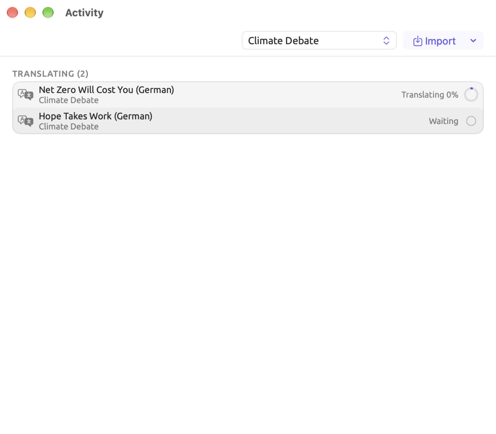
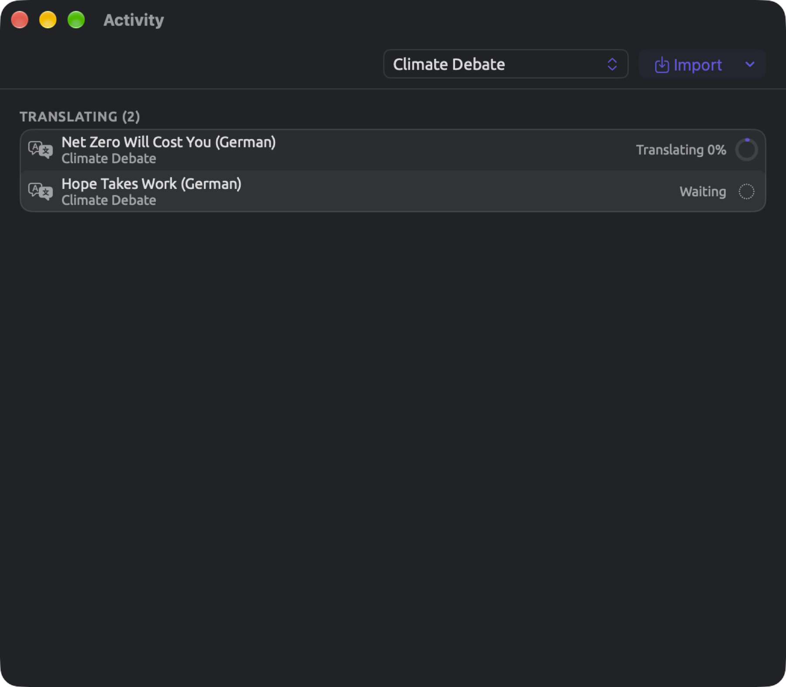
In the case of failure, the translation moves to the Failed section of the Activity window, showing the reason. Its row will disappear from the sidebar. In the Translate dialog interface, the language option becomes available again. Click Retry to begin translating the document anew.
Retry works only if you haven’t deleted the languages. In the event that you did so, the translation must restart from the sidebar, prompting macOS to redownload. Once the translation fails, it remains in the Activity window until you retry it, delete the original, or quit LemmaLoom.
Should a translation be waiting or in progress when you quit LemmaLoom, it is canceled, and restarting the translation will be required.
How text is translated
The translation feature in LemmaLoom uses the macOS translator, which will translate your text sentence-by-sentence. LemmaLoom divides up your texts according to where line breaks occur in the text, then divides those into individual sentences. If your text is the transcript of an audio/video file, LemmaLoom will divide your transcript according to its segments first, then into sentences. Your sentences will get individually translated and assembled back together in the order they appeared:
- Paragraphs and line breaks will be preserved in the output.
- Every sentence of your text gets translated to one contiguous stretch of the translation. The alignment retains a record of this correspondence.
- Sentences are separated in translations by one space, except for languages that don’t require spacing between words, such as Chinese; they are directly concatenated.
- Any sentences for which macOS couldn’t produce a translation are retained in the original language.
Since the translation software sees only the current sentence during the process, any word that depends on the previous sentence, such as a pronoun, may be translated incorrectly. Sentences broken across two lines, as in a text file with a line break at the end of every line, will be translated as two pieces; therefore, join such lines, and correct any other errors, in the original before proceeding with the translation (refer to Editing a document’s text in Chapter 5, Reading and Editing).
Translations of audio or video documents play back the original document’s media file and retain the segmentation by speaker with the timing intact. An example translation from English to German of “Radio Debate” would thus list the turns of “Host”, “Activist”, and “Skeptic”, and play the recording from any passage of the German text.
Translations in the project
Where translations appear
Translations appear in the Documents section of the sidebar under the original. For instance, in “Climate Debate”, “Running Out of Time (German)” can be found in the “Print” group beneath “Running Out of Time”. The name of the translation document is the name of the original, followed by its language within parentheses. This can be edited just like any other document’s name. Searches in the Search Documents field will yield results for both the translations and the originals. Because translation titles end with their languages, a search for German would return all German translations within a project, except if you have renamed them.
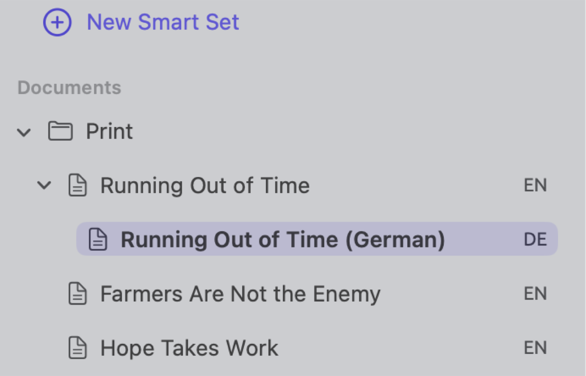
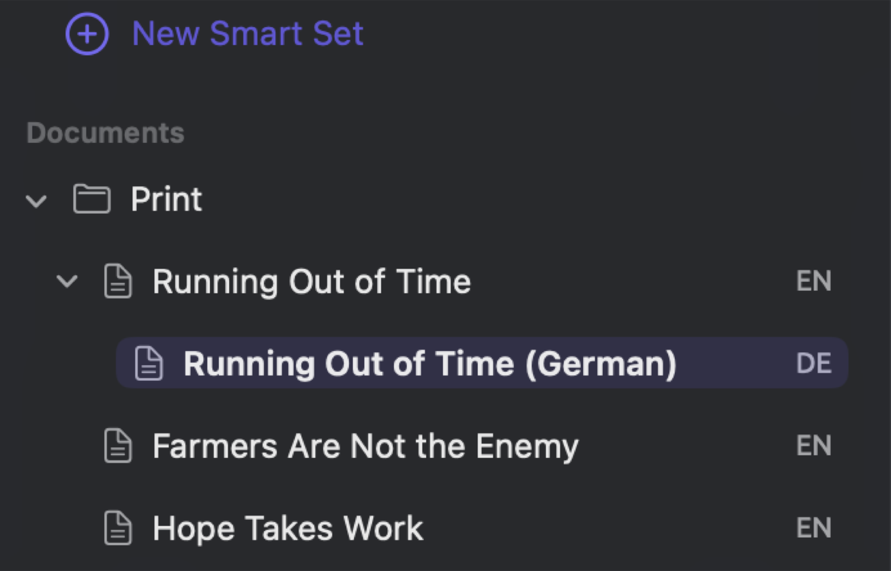
Disclosure triangles for originals let you collapse or expand their translations. The sidebar listing of a set contains only the originals, while the counts beside a set or tag include only the originals (see Translations in analyses later in this chapter).
What a translation shares with its original
When you translate a document in LemmaLoom, the translation receives the author names, date, publisher name, publication title, URL, DOI, color, group location, tags, and attribute values from its original.
All language versions share certain characteristics:
- Tags. Tagging a document version “Running Out of Time (German)” tags “Running Out of Time” as well, and vice versa.
- Attribute values. Specifying “Readership” in the properties of any version sets it equally for all language versions.
- Group membership. Moving “Running Out of Time” into the “Online” group automatically moves its German counterpart there too.
- Set membership. The original documents are members of document sets, and their translations follow them.
- Codes with scopes of one document or one set. A code whose Scope is Document and names “Running Out of Time” can also be applied in “Running Out of Time (German)”, and a code limited to the “Activists” set can be applied in the translations of the activist texts (see Where a code can be used in Chapter 7, Coding).
- Codings, memos, bookmarks, and links, through copies. Annotations in both languages later in this chapter discusses copies between language versions in more detail.
Every language version retains other elements exclusively for itself:
- the title, author names, date, publisher name, publication title, URL, DOI, and color;
- the language;
- the text, and any edits you make to it;
- its index, with its lenses, statistics, and grammar views.
Working in a translation
The indexing of a machine translation in English, German, or Chinese is the same as that of any other imported document. Machine translations get their own lenses and separate Text, Grammar, Coding, and Multimode tabs in the inspector, and, as usual, Query under Multimode reads only the translation itself.
Machine translations often require a bit of editing because of terms translated in two different ways or sentences translated nonsensically. Make an edit to a translation much the same as you would to a regular document. Select Document ▸ Edit (⇧⌘E), edit the document, and hit the Save button. Edits move the alignment along with annotations so that both languages continue to align correctly despite edits (see How annotations follow edits in Chapter 5, Reading and Editing).
Edits always affect only one language version of the same text. When you make an edit to an original, you must delete the translation to generate another translation from the newly edited text (see Translating again later in this chapter).
Translations in exports
When exporting an original document to a LemmaLoom archive, translations are included in the export. Therefore, if exporting “Running Out of Time”, the resulting archive includes “Running Out of Time (German)” as well. In contrast, a REFI-QDA project treats the translation document separately. If the relationship between the two must remain in place during the transfer, opt for LemmaLoom archives. Additional guidance can be found in Exporting documents in Chapter 22, Exchanging and Exporting.
Reading a translation beside its original
Comparing both versions next to each other allows you to examine how macOS has rendered a passage prior to using it. This allows you to keep the translation open as a reference while conducting a close reading of the original version. You can also compare the codings of the two versions this way.
This figure shows “Running Out of Time” on the left and “Running Out of Time (German)” on the right, with both scrolled together. Because the translation is in the active pane, the inspector displays its 13 codings, which mirror those of the original.
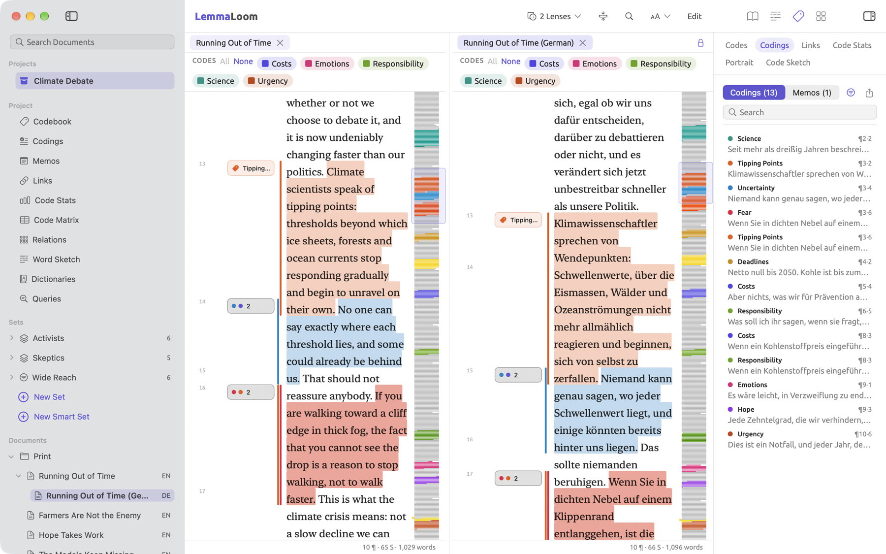
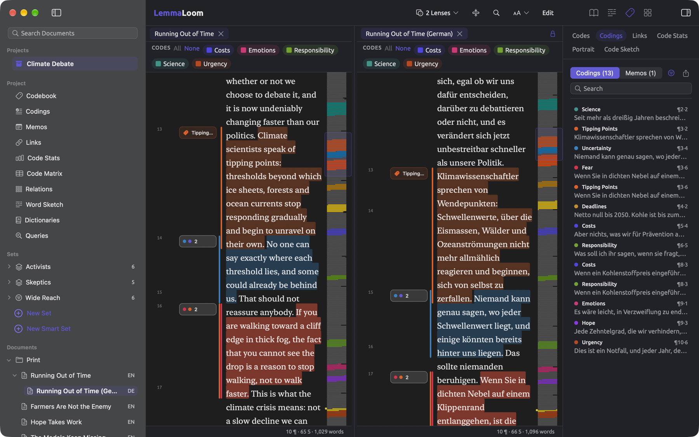
To read a translation next to its original:
- In the sidebar, right-click the translation and choose Open Beside Original, or choose Window ▸ Open Beside Original while the translation is selected in the sidebar or active in the reader. The original opens in a tab in the main pane, and the translation in the right pane, which becomes active.
- To scroll the two together, click the lock button, Scroll together, at the right end of the right pane’s header, or choose View ▸ Scroll Together (⌥⌘L).
If the right pane had displayed another document previously, the translation replaces that document.
Split view
Split view allows you to look at two documents simultaneously, like “Running Out of Time” next to “Net Zero Will Cost You”, representing two opposing viewpoints in the discussion.
Opening two documents side by side
There are a few ways in which you can open a document in the right pane:
- Right-click a document in the sidebar, then click the Open in Split View option in the shortcut menu that appears. The document opens in the right pane next to the document in the main pane. The option is disabled if the document itself is already shown in the main or right pane, or if a set, detail view, or tag is active.
- Right-click a tab above the reader, then select the Open in Split View option from the resulting shortcut menu. If a document is active, the other tabs containing documents become available to be opened in split view. The document leaves the tab strip and moves to the right pane.
- Select the Open in Split View option from the Window menu, followed by choosing the document you wish to view. The submenu under Window ▸ Open in Split View displays the document selected in the sidebar, as well as other tabs of documents.
- Select two documents in the sidebar (by clicking on one and ⌘-clicking on the other), then right-click either of them and choose the Open Side by Side option from the shortcut menu, or select Window ▸ Open Side by Side from the menu bar. The document higher in the list will be displayed on the left, and the other on the right.
- For a translation, select the Open Beside Original option in the shortcut menu, as described above.
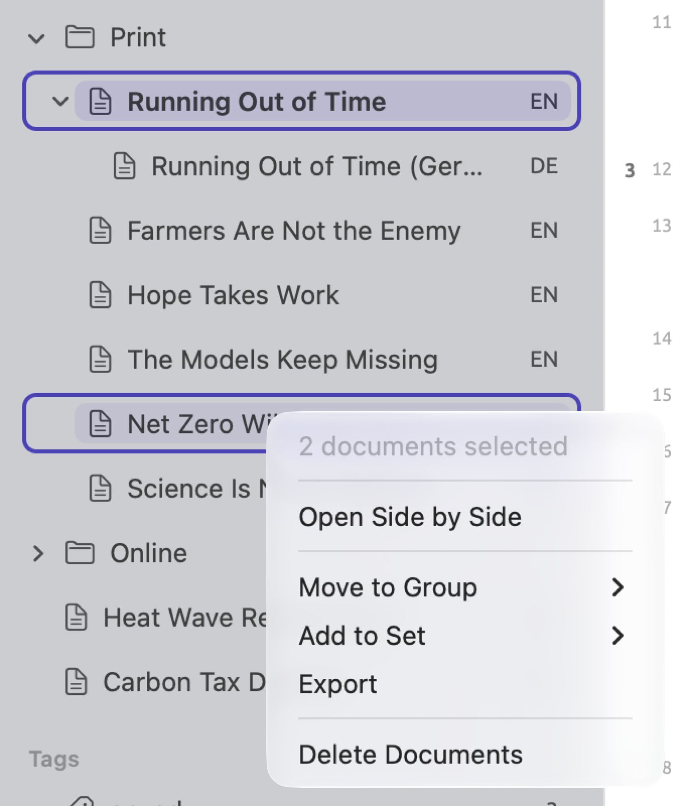
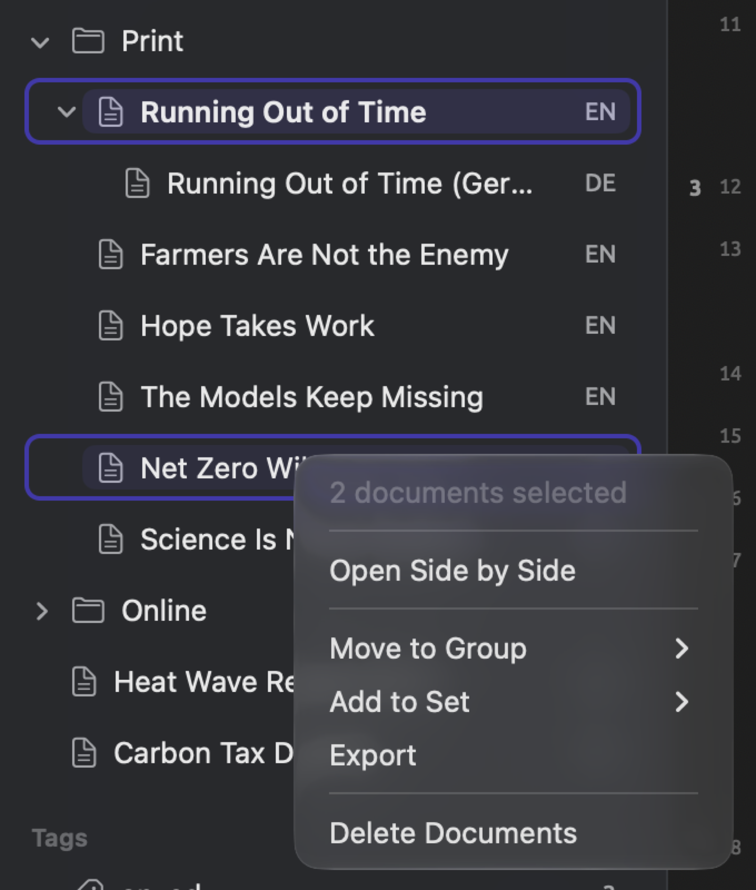
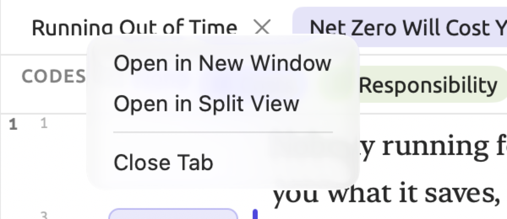
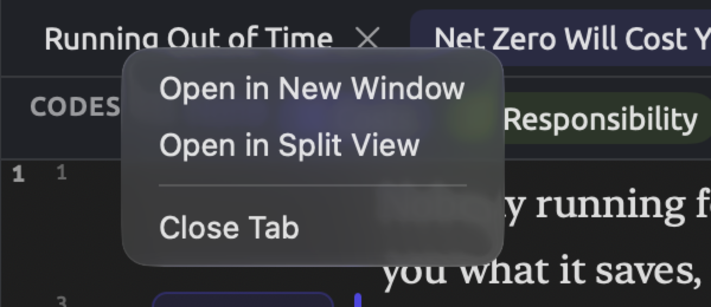
There is only ever one document opened in the right pane at once, so opening another there closes the one it replaces. A document is shown in only one pane at a time.
The active pane
The active pane’s tab, or its header in the right pane, is highlighted in full, whereas the non-active pane’s tab or header is lighter. Opening a document in split view activates the right pane. Clicking on a tab, or selecting Window ▸ Show Next Tab (⇧⌘]) or Window ▸ Show Previous Tab (⇧⌘[), activates the left pane.
All of the following affect the document currently opened in the active pane:
- The inspector;
- All tools available in the title band (lens menu, collapse button, find, display settings, and Edit);
- Menu commands, including Edit ▸ Find (⌘F), Document ▸ Edit (⇧⌘E), and Document ▸ Auto Code… (⇧⌘A);
- The key Esc to clear the current selection or close any opened search bar in the active pane;
- The Diagram window (refer to The Diagram window in Chapter 11, The Grammar Inspector); and finally,
- The document scope for the Word Sketch window.
In the sidebar, the active pane’s document is highlighted. Clicking a document in the sidebar will load it in the left pane and activate that pane, unless it is already in the right pane, in which case the right pane becomes active.
The inspector follows the active pane
Clicking into the other pane will change the inspector to show that pane’s document but retain the inspector’s tab, facet, and width while maintaining whether the inspector is currently visible or not. If, for instance, the Codings facet of the Coding tab is displayed for “Running Out of Time”, then clicking into “Running Out of Time (German)” will display the codings for the translation document right in that spot.
What each pane maintains
The lenses, search bar, selection, and scrolling position are separate for each pane. With split view activated, you could read “Running Out of Time” with the Modality lens enabled and “Net Zero Will Cost You” with the Cohesion lens enabled. Font, text size, gutter, and layout are shared by both panes.
Initially, both panes have equal widths. Change this proportion by dragging the divider between them. Each pane has a minimum width. The splitting ratio will apply to all your projects. For windows whose size doesn’t accommodate both minimum-width panes, each pane still has an equal share of the width.
When viewing the project shelf, a set, or a tag in the left pane, the right pane becomes hidden until a document tab becomes active once again.
LemmaLoom remembers the right pane’s document for each project. Returning to a project or opening LemmaLoom again shows the right pane document as-is but without the Scroll Together toggle enabled.
Closing split view
Here is how you could close split view:
- Click the × in the header of the right pane.
- Right-click the header and select Close Split View from the shortcut menu.
- Go to Window ▸ Close Split View.
- Click in the right pane and then select File ▸ Close Tab (⌘W).
The document on the right side gets closed along with the split view. In split view with the left pane active, ⌘W closes its active tab as usual. In case you have only one tab open on the left and close it, the right-pane document moves into the main pane.
Right-clicking the header gives the option Open in New Window, opening the document in its very own Document window complete with its own inspector (see Opening a document in its own window in Chapter 5, Reading and Editing). From the menu bar you also get Window ▸ Open in New Window doing the exact same thing, but for the document in whichever pane is currently active.
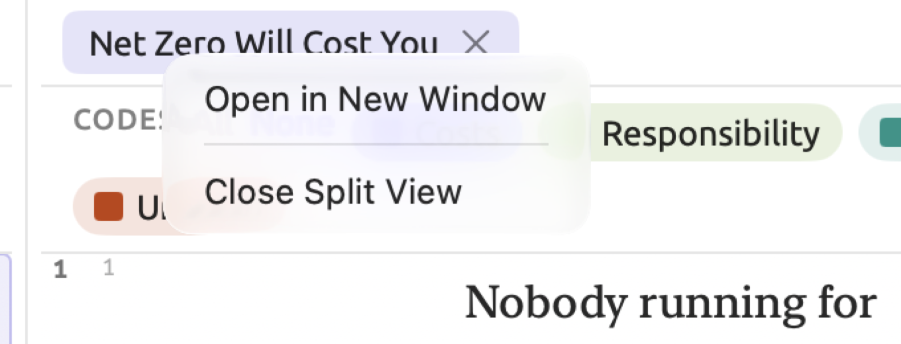
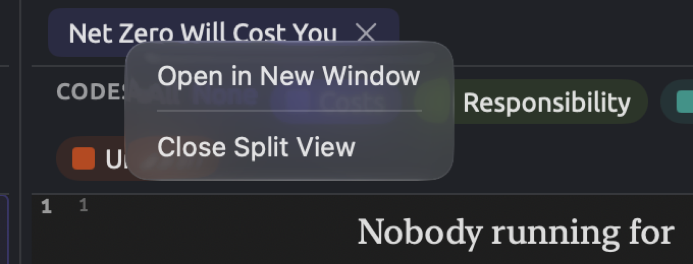
Scrolling together
Scrolling together maintains the vertical positions of your original and translation such that corresponding paragraphs appear next to each other as you progress through both. When the two panes display the language versions of the same document, the lock icon becomes available in the header area at the right edge of the right pane. This applies to both an original and translation pair, as well as two translations of one original. You can click the lock button or select View ▸ Scroll Together (⌥⌘L) to enable scrolling the two panes together. The lock icon will close, and the menu item will feature a checkmark symbol. Immediately following activation, the right pane jumps to the passage at the top of the left pane, and scrolling one pane results in the automatic scrolling of the other. Any other combination causes Scroll Together to be disabled.
LemmaLoom synchronizes scrolling based on the alignment between the two versions. LemmaLoom takes the point at the top of the pane you scroll and finds the sentence it lies in. It then scrolls the other version until the corresponding part of the sentence arrives at the top of its own pane. Inside of a sentence, LemmaLoom maintains the proportional distance, meaning one fourth into an English sentence corresponds to one fourth into its German translation. The synchronization continues despite any difference in the number of lines per sentence.
Activating any other document in the left pane removes the lock and terminates scrolling synchronization. Making the original, or another of its language versions, active again resumes scrolling synchronization. Closing the split view terminates Scroll Together.
Annotations in both languages
Translations maintain separate codings, memos, links, and bookmarks per language version. If you code a passage in “Running Out of Time”, then LemmaLoom will automatically apply the same code to the corresponding passage in “Running Out of Time (German)”, and vice versa. Once you code a text, the codings remain linked, and you could analyze either version on its own or compare how a coded passage reads in each language.
What is copied
When making a new translation of a document, LemmaLoom will copy its codings, memos, links, and bookmarks into the new translation. As such, when adding any new items to a language version, LemmaLoom will automatically duplicate them to all the other language versions:
- a coding, complete with the code;
- a document memo or passage memo, complete with the text, code, and tags;
- a bookmark, complete with the comment and color;
- a link, complete with the relation, comment, color, and tags, unless it joins two language versions of one document.
When copying a link, only the end of the link that occurs inside the translated document is moved in the copy. For instance, in the “Climate Debate” project, there exists a link connecting a passage in the document “Let’s Not Panic” to another in “Running Out of Time”. The resulting copy of this link in the German translation of “Running Out of Time” connects to the translated passage of “Running Out of Time (German)” from the very same passage of “Let’s Not Panic”. Were “Let’s Not Panic” translated as well, then two more copies of the link would connect from the corresponding passage of that translation to “Running Out of Time” and to “Running Out of Time (German)”.
A link between two passages of “Running Out of Time” is duplicated into a link between the respective passages of the German translation.
Annotation copies, together with the annotation, can be undone in one step via Edit ▸ Undo (⌘Z). Additionally, any automatically generated codings by means of Auto Code… are also copied across your translations. See Coding passages automatically in Chapter 7, Coding.
Changing and deleting copies
Changes made to an annotation are automatically made to all of its copies:
- editing a memo’s body text, its code, or tags affects all of its versions equally;
- changing a bookmark’s comment or its color, a link’s relation, comment, color, or tags affects all of them equally;
- attribute values assigned to a coding apply equally to all of them.
If the annotation itself is deleted from one document, all of its copies will be deleted at once; deleting the “Urgency” coding on the sentence in “Running Out of Time (German)” removes it from “Running Out of Time” as well.
Positions of annotations, however, belong to individual documents. As you edit one version of the text, your annotations will shift accordingly (see How annotations follow edits in Chapter 5, Reading and Editing); the copies of these annotations in other versions retain their positions.
Where copies are stored
Placing copies uses sentence alignments, which pair sentences between the two versions of a text. Hence, your copy will be placed correctly into the corresponding translated sentence.
Annotations made on complete sentences are copied perfectly as-is. When working on parts of sentences, however, LemmaLoom calculates at what proportion of a sentence a passage begins and ends, relative to its total character count. This proportion is then used to place the copy at an equivalent place within the translated sentence:
denotes the total number of characters, spaces, and punctuation marks prior to the beginning (or the end) of the selected passage within the original sentence. Dividing it by , the length of this sentence measured in characters, gives the proportion . Multiplying it by (read “L prime”), the length of the translated sentence, yields (“q prime”), the place within the translated sentence. This figure is rounded to the nearest integer, always toward the larger integer when halves occur. In languages where spaces separate words, the copy will then extend to full words. Additionally, spaces at the beginning and end of any copy will be trimmed.
Consider this sentence taken from “Running Out of Time”:
On a podium these dates certainly sound impressive, but look closely at who will still be in office when they arrive.
Its translation into German says:
Auf einem Podium klingen diese Daten sicherlich beeindruckend, aber schauen Sie genau hin, wer noch im Amt sein wird, wenn sie ankommen.
These sentences have lengths of 117 and 136 characters, respectively, counting spaces and the period. Suppose the passage these dates in the first sentence is coded with “Deadlines”. Counting On a podium and the space after it, there is a distance of 12 characters. The entire phrase On a podium these dates amounts to 23 characters. Therefore, the passage begins after 12 characters and ends after 23:
Rounding to 14 and 27, the copy stretches from after position 14 up to and including position 27 within the second sentence, namely, um klingen di. Expanding this copy to encompass whole words produces Podium klingen diese.
Another annotated passage reads who will still be in office when they arrive, coded with “Responsibility”. Starting after 72 characters, this passage extends to 116 characters. Hence, positions of and yield 84 and 135 as rounded numbers. The copy runs from after position 84, inside genau, extending through exactly position 135. Thus, expanding the copy to whole words results in genau hin, wer noch im Amt sein wird, wenn sie ankommen.
As German places the verb klingen (sound) before diese Daten (these dates), the expanded copy Podium klingen diese captures klingen but not Daten. At the same time, the copy stays in the right sentence. Words before wer (who) take up a larger share than before who, therefore making the latter copy start early and take in genau hin. Counts of codings per document and queries looking for sentences coded with a certain code remain accurate.
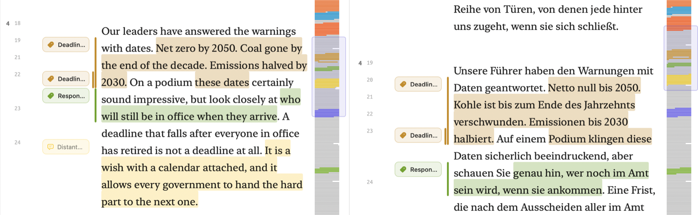
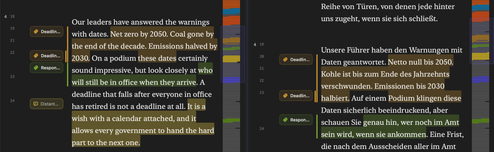
Where your method allows, try to code complete sentences, because their copies are exact. With smaller selections, use the copy to locate the appropriate sentence, since the words it covers can differ from the ones you coded.
Deleting originals and translations
In order to delete either the original or a translation, right-click on it, choose Delete Document, and hit Delete in the alert. (Refer to Deleting documents in Chapter 3, Projects and Documents.)
Deleting a translation removes that translation only:
- Any codings, memos, bookmarks, and links associated with it will be deleted; the corresponding codings, memos, bookmarks, and links in the original and other translations will remain.
- Any links made between the translation and the original will be deleted.
- The codes whose Scope is set to the translation will now name the original, and can be applied in the original and its remaining translations.
- For a recording, its media file stays, since the original itself uses the media file.
If you delete the original document, all translations of it are deleted together, despite the alert only mentioning the original document. Should the original have an unfinished translation pending in the Activity window, that translation is canceled right away. However, any ongoing translation finishes, and the Activity window lists it under Failed with Document not found.
The undo operation Edit ▸ Undo Delete Document (⌘Z) retrieves the deleted document including its translations and annotations.
Translating again
When updating the translation based on changes made to the original or starting anew with a translation, delete the existing translation and create a new translation based on the original. This will erase all edits made to the old translation, its title, should you have changed it, and any links connecting it back to the original.
- Right-click the translation and choose Delete Document, then click Delete.
- Right-click the original, choose Translate, and choose the same language under To.
- Click Translate.
Each of your annotations from the previous translation will have been duplicated in the original document; therefore, your new translation will inherit every annotation with the new alignment applied.
Translations in analyses
When analyzing a set of documents, or even an entire project, the analysis takes into account only the original documents unless you specify differently. Single-document analyses consider the actual document regardless of whether it’s the original document or a translation, so to analyze “Running Out of Time (German)” on its own, open it and use the inspector.
| Analysis | What it reads |
|---|---|
| The inspector, and queries in a document’s Multimode tab | That document |
| Codebook, Codings, Memos, Code Stats, Code Matrix, and Relations for a set or the project | Originals |
| Links for a set or the project | Each link once |
| Queries for a set, the project, or all projects | Originals, unless you change the corpus |
| Word sketches and Sketch Space for a set or the project | Originals, unless you change the corpus |
| The counts in the Dictionaries section | Originals |
| Auto Code… for a set or the whole project | Originals. If a translation is active when you open Auto Code…, that translation is read in place of its original. |
| Smart sets | Originals |
Codings applied to a translation are tracked in the relevant views via their copies in the original document. For instance, when you code a passage in “Running Out of Time (German)”, the Code Stats view of the “Activists” set records this as one occurrence, in “Running Out of Time”. The alerts for delete or merge operations on codes are exceptions, where both the copy and original are accounted for. An “Urgency” coding in “Running Out of Time” and its copy in “Running Out of Time (German)” appear as two coded segments in these alerts.
Adding a translation to a set adds its original instead, as discussed in Translations in Chapter 8, Sets, Groups, Tags, and Attributes.
Results obtained from translations reflect how macOS has phrased the text. Translation may introduce or drop hedges and modal verbs and modify the word order. It is advised to use results to identify passages and follow with close readings of those passages in their originals.
The Corpus option in queries
In the Queries sections of a set and the project, and in Window ▸ Queries, the menu showing Originals at the top of the Options condition sets the corpus (see Options in Chapter 15, Building a Query). You could choose Translations to query the grammar of originals in a language other than English, German, or Chinese through their translations, or Both for hits from every language version.
- Originals, the default corpus, reads the documents within the defined scope.
- Translations reads the translations of those documents instead, in every language they have been translated into.
- Both reads both the original and translated documents.
The scope is derived by LemmaLoom from the originals. In “Climate Debate”, with the corpus changed to Translations, a query on the “Activists” set reads the translations of the activist texts, specifically “Running Out of Time (German)” here. A query in a document’s Multimode tab reads only its own document.
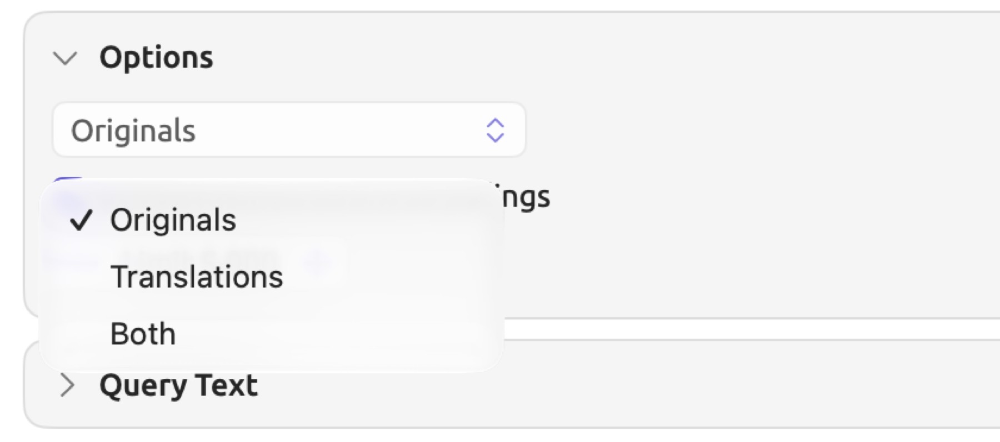
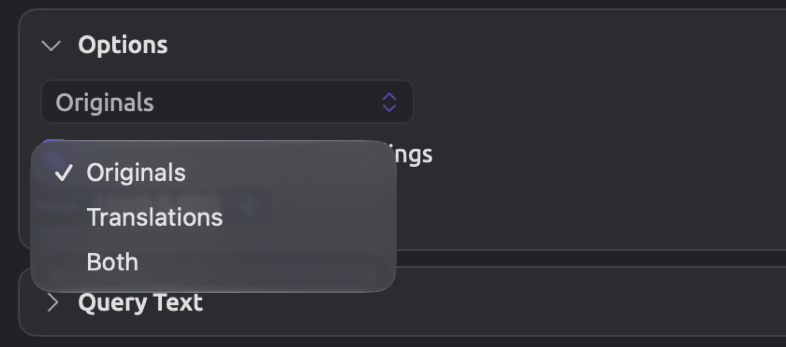
Both means both originals and their translations, so an annotation and its copy are two hits. When querying Codings on the “Urgency” code for instance, a coding in the original “Running Out of Time” is found alongside its counterpart coding in the “Running Out of Time (German)” translation.
When originals have translations into more than one language, Translations and Both mix the languages. Adding a rule Language is any of German in the Where condition keeps only German translations.
In a keyword list comparison, either side depends on the corpus too, making both sides composed of translations when choosing Translations (see Keywords in Chapter 16, Query Results and Statistics).
Your query retains the choice you picked. When exporting query results as Markdown, the provenance lists it under Corpus (see Markdown with provenance in Chapter 16, Query Results and Statistics).
The document field Is Translation helps distinguish originals from translations. By navigating to the project’s Queries section and setting the corpus to Both, then finding Library · Documents with the rule Is Translation is true, every translation document will be listed. Smart sets operate solely on originals and thus have Has Translations instead which, with the rule set to is true, returns the original documents having translations.
Translations in word sketches
When generating a word sketch or Sketch Space for a set, tag, or project in LemmaLoom, it will read the originals. If any documents in your scope have translations in English, German, or Chinese, then a menu will become available in the bar at the top, after the word field. Your initial selection will read Originals. In the menu, under Corpus, you can choose between Originals and each translation language. As word sketches focus on analyzing text in one language at a time, there is one option per translation language. In “Climate Debate”, for example, the translation option would be Translations (German), for “Running Out of Time (German)”. In the Word Sketch window, the same menu also sets the scope and then shows both, such as “Climate Debate” · Originals.
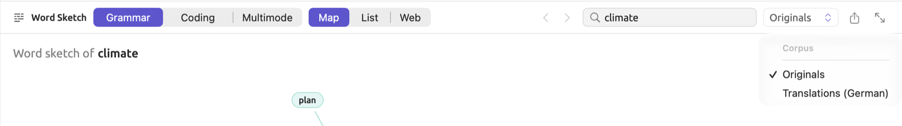
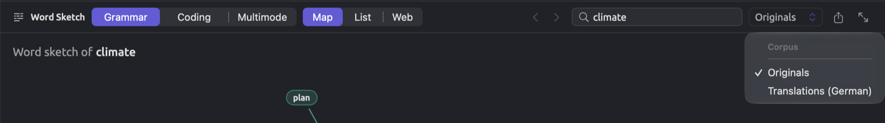
Language choice dictates which translations are included. Once a language is chosen, type the word in that language, in this case Klima instead of climate.
Further reading on word sketches is in Chapter 12, Word Sketch, and on Sketch Space in Chapter 14, Sketch Space.
Finding passages by their translation
You may wish to query your alignments themselves, for instance when you know how a passage reads in the translation and want to find it in the original. For example, in “Running Out of Time”, you may wish to know what English sentences have a translation that includes the word Klima.
The unit Translation · Alignments in the Find menu returns a hit for each pair of a sentence and its translation. The fields returned are Source Text, Translation Text, and Translation Language. Source Text is always the sentence in the document of your query, while the other two describe the sentence paired with it. In original documents, this refers to the translation, and a separate hit is made for each language of translation. In translated documents, this refers to the sentence of the original.
The Translated As relation in a context row preserves the hits in any sentence whose translation matches your rules (see Context in Chapter 15, Building a Query). To get hits for the sentences of your document whose translation matches a criterion, say, containing a particular word:
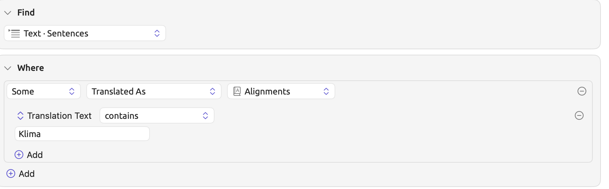
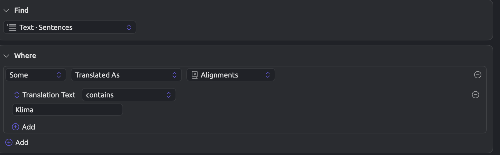
- Open the document. In the inspector, click Multimode, then Query.
- In the Find condition, choose Text · Sentences.
- In the Where condition, click Add and choose Add Context. Change the row to Some, Translated As, and Alignments.
- Click the Add button inside the context row, choose Add Rule, and choose Translation Text as the field.
- Set the comparison to contains and type the word as the value.
The results list all matching sentences immediately once the rule has its value.
Commands for translations and split view
| Command | Shortcut | Where it is |
|---|---|---|
| Project ▸ Translate | Also in the shortcut menu of an original in the sidebar | |
| Window ▸ Open Beside Original | Also in the shortcut menu of a translation in the sidebar | |
| Window ▸ Open in Split View | Also in the shortcut menu of a document in the sidebar, or of a tab | |
| Window ▸ Open Side by Side | Also in the shortcut menu of two selected documents | |
| Window ▸ Close Split View | Also in the shortcut menu of the right pane’s header | |
| Window ▸ Open in New Window | Also in the shortcut menu of a tab, or of the right pane’s header | |
| View ▸ Scroll Together | ⌥⌘L | Split view with two language versions of one document |
| File ▸ Close Tab | ⌘W | Closes split view while the right pane is active |
| Window ▸ Activity | ⌥⌘0 | Lists translations that are waiting, in progress, or failed |